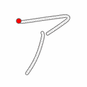

<div id="learn-div">
    <h1 style="margin: 0px; margin-top: 20px;">
        Hiragana Chart
    </h1>
    <p style="margin: 0px;">
        click on the kana to see the stroke order
    </p>
    <div id="hiragana-div">
        <div id="hiragana-grid-first">
        </div>
        <div id="hiragana-preview">
            
        </div>
        <div id="hiragana-grid-second"></div>
    </div>
    <div style="min-height: 50px;"></div>

    <h1 style="margin: 0px; margin-top: 20px;">
        Katakana Chart
    </h1>
    <p style="margin: 0px;">
        click on the kana to see the stroke order
    </p>
    <div id="katakana-div">
        <div id="katakana-grid-first">
        </div>
        <div id="katakana-preview">
            
        </div>
        <div id="katakana-grid-second"></div>
    </div>
    <div style="min-height: 150px;"></div>
</div>
